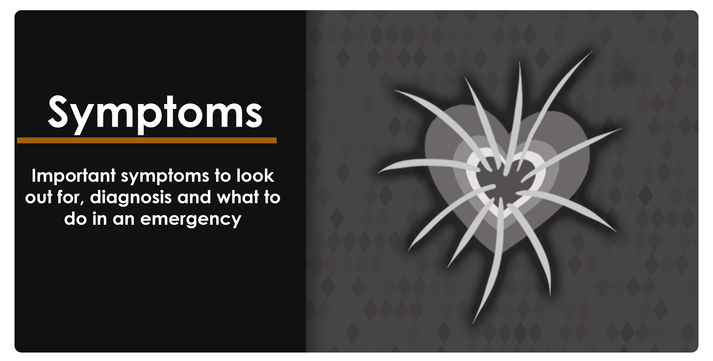

What are the symptoms?
Common symptoms of Wolff-Parkinson-white are:
* Fast heart rate, even when resting. Comes about suddenly.
* Fast heart rate that doesn’t stop within 15 minutes and requires medical assistance.
* Chest pain
* Heart palpitations
* Feeling faint
* Losing consciousness
* Shortness of breath
* Fingertips/toes turning a blue-purple colour
* Feeling tired/weak with exercise
* Abnormal feeling pulse
* Lack of sleep
* Suddenly waking up during the night in panic
* Fear and anxiety
* Pale complexion
You may also feel that your pulse is odd, fast in pace, missing beats and then going back to normal. This can also be a sign of the SVT symptom caused by a WPW pathway.
If you have one or more of these symptoms it is recommended that you report them to your GP who can arrange for tests such as an ECG to record your hearts electrical functions and diagnose if you have an underlying heart condition.
Should I be worried if I have WPW?
Many have the condition and don’t know it as they don’t present symptoms (asymptomatic), however this doesn’t mean that the condition isn’t there. WPW can be very unpredictable; it’s the type of condition where you can go through life with no problems and then it will suddenly cause symptoms and dangerous heart rates without warning. Which is why it’s important to spot it early on so it can be monitored and action taken to manage it.
Dangers of the condition
Because Wolff-Parkinson-White can cause dangerously fast heart rates that sustain themselves, cardiac arrest is a very real possibly for people during a flare up. While normal healthy hearts beat at around 70-90bpm, hearts suffering with WPW can have dangerously fast heart rates up to 300bpm during a flare-up. Because the heart muscles are not designed to sustain this bpm range, it causes the heart muscles great stress and will eventually result in cardiac arrest if the sufferers heart rate isn’t returned to a normal range quickly. Sometimes these WPW loops can resolve themselves or be stopped with the manover, but many situations will require emergency treatment as soon as possible to repace the heart.
If you have a fast heart rate caused by a WPW flare up that is not stopping and/or you have sudden chest pain, call 999 immediately for emergency medical assistance.